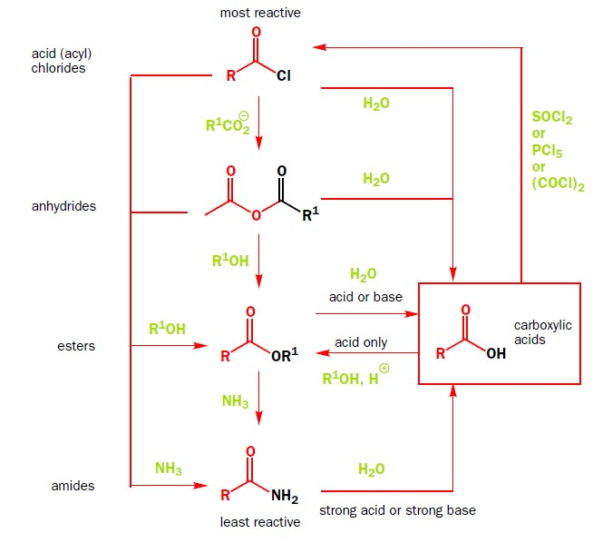
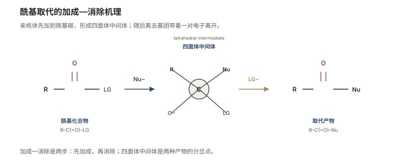
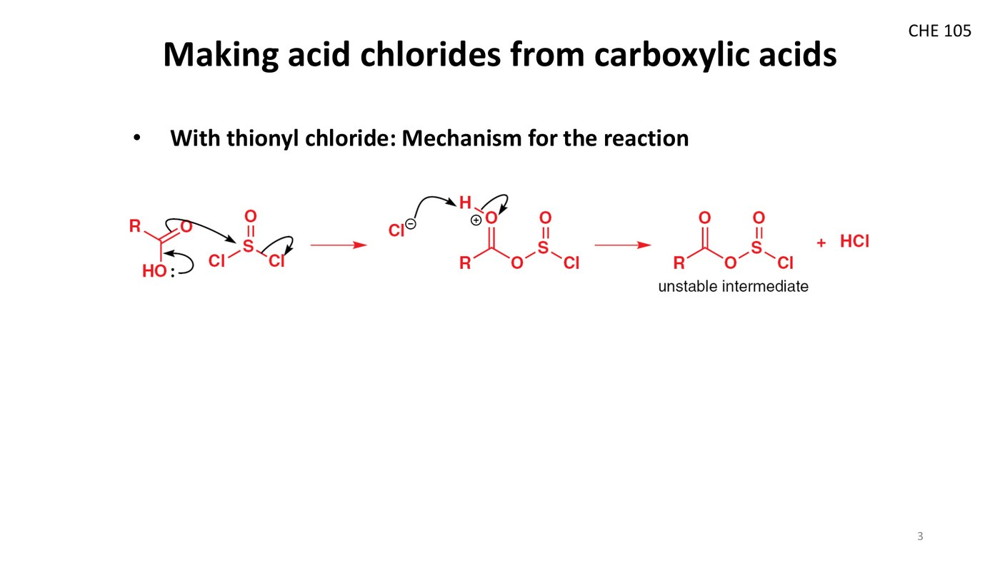

CHE105 · 第 11 章
羰基的亲核取代：酸衍生物
Nucleophilic Substitution at the Carbonyl Group
虚线下划线为术语；悬停查看中文、英文与释义，完整词典见“术语”。
本章目录
本讲把羰基的亲核加成升级为亲核取代：亲核体加成到羰基碳，四面体中间体随后把原来的取代基当离去基团丢掉。掌握这条“加成—消除”骨架，酸衍生物之间的转化与反应性排序就都能推出来。
本章要点
- 酰基取代 = 亲核加成 + 消除离去基团，中间必然经过四面体中间体。
- 好亲核体 = 电子密度高、极化性好；好离去基团 = 走后稳定的弱碱。
- 离去基团能力与碱性成反比；共轭酸的 pKa < 5 通常就是好离去基团。
- 卤素顺序 I− > Br− > Cl− > F−；磺酸酯（TsO−、MsO−）与 H2O、N2 是极好的离去基团。
- F− 是例外：碱性强弱说它该走，C–F 键太强说它走不了，后者胜出。
- 羧酸与 SOCl2 或 PCl5 反应制酰氯；两者的机理都是先活化 OH，再让 Cl− 进攻。
- 酯与 RMgX 不能停在酮：酮比酯更活泼，生成的酮会立刻再被加成，最终得到醇。
- NaBH4 不还原酯；把酸/酯还原成醇需要更强的氢负离子试剂。
11.1 酰基取代的总骨架：加成—消除
羰基化合物遇到亲核体时，第一步总是同一个动作：亲核体的孤对进攻羰基碳，C=O 的 π 电子推向氧，碳由 sp2 变 sp3，形成一个四面体中间体tetrahedral intermediate。区别在第二步：如果羰基上连的是 H 或碳（醛、酮），中间体只能被质子化，得到醇，这是亲核加成nucleophilic addition；如果羰基上连的是一个能带着电子对离开的基团（−Cl、−OR、−NR2），中间体就会坍塌，把那个基团当离去基团leaving group丢掉，碳回到 sp2，得到亲核取代nucleophilic substitution产物。
讲义把这条骨架写成一句口号：nucleophilic attack followed by loss of leaving group，并且强调“there is always a tetrahedral intermediate”。这句话是本章的判分点——写机理时不能从酰氯直接跳到酯，中间那个四面体必须画出来。
用箭头描述标准三步：① 亲核体孤对 → 羰基碳；② C=O 的 π 键 → 氧（氧带负电）；③ 四面体中间体中，氧的孤对 → 碳，同时 C–LG 键的电子对 → LG，LG 离去。若反应在碱性条件下进行，中间体的氧负离子需要先被质子化再坍塌，或坍塌后再质子化，具体顺序取决于条件。


绘图提示词
Clean vector three-stage mechanism diagram: stage one shows an acyl chloride with a nucleophile attacking the carbonyl carbon by a curved arrow while the C=O pi bond moves to oxygen; stage two shows the tetrahedral intermediate with O minus, the nucleophile, the leaving group LG and the R group arranged tetrahedrally, labeled tetrahedral intermediate; stage three shows a curved arrow from the oxygen lone pair reforming the C=O while the C-LG bond electrons leave with LG, giving the substitution product. Flat 2D, thin 1.5 px strokes, muted slate blue and warm grey palette, white background, English labels, no cartoon, no gradient, no shadow.
L11 p.1–2
11.2 好亲核体与好离去基团
讲义把影响反应速率的两端分开问：什么使一个物种成为好亲核体，什么使一个基团成为好离去基团。
亲核体的本质是“愿意把一对电子交出去”。电子密度越高、越容易被极化、空间阻碍越小，亲核性越强。负电荷物种通常比中性物种强（如 RO− 强于 ROH）；同一周期内，碱性越强往往亲核性越强，但两者并不总是平行——体积大、可极化的物种（如 I−）在亲核性上常超出其碱性所预示的位置。
离去基团的本质是“走后能稳住那对电子”。讲义的定义是：离去基团是反应中带着一对电子离开分子的原子或基团。它离开后如果生成一个稳定、碱性弱的物种，这一步的活化能就低，反应就快；反之，若生成强碱（HO−、RO−、H2N−），这一步在能量上不利。
所以有一条贯穿全章的判据：离去基团能力与它的碱性成反比，弱碱是好离去基团，强碱是差离去基团。补充材料给了一条好用的经验规则：共轭酸的 pKa 小于 5 的物种，一般都是好离去基团。
L11 p.1；Leaving Groups p.3–6
11.3 离去基团能力表：从 I− 到 F−
卤素是最常用的一组对照。能力顺序是 I− > Br− > Cl− > F−：碘离子最大、最可极化、负电荷最分散，走后最稳定；溴、氯依次减小；氟离子最小、电荷最集中，是最差的卤素离去基团。注意这个顺序与“电负性顺序”相反——电负性 F > Cl > Br > I，但离去能力反过来，因为决定因素是走后物种的稳定性，不是成键原子的电负性。
比卤素更好的离去基团是磺酸酯：对甲苯磺酸酯tosylate（TsO−）、甲磺酸酯mesylate（MsO−）、三氟甲磺酸酯（TfO−）。负电荷通过三个氧与硫之间的共轭被分散，走后极其稳定，因此它们常被用来把“差的离去基团”改造成“好的离去基团”——例如把醇的 −OH 变成 −OTs。
中性分子也可以是极好的离去基团，因为它们走后本身就是稳定分子：水（H2O）、氨（NH3）、氮气（N2）。其中最极端的是 N2：重氮盐（R–N2+）放出氮气后生成碳正离子，这一步在室温下自发进行，因为 N2 是极其稳定的分子。讲义把它称为“终极离去基团”。
Clean vector horizontal ranking bar of leaving group ability decreasing from left to right, with labeled boxes in order: diazonium giving N2, tosylate, mesylate, iodide, bromide, chloride, water, fluoride, hydroxide, alkoxide, amide, arranged as a staircase descending to the right, each box labeled with the group and its conjugate acid pKa where available, and a side axis arrow labeled weaker base means better leaving group. Flat 2D, thin 1.5 px strokes, muted slate blue and warm grey palette, white background, English labels, no cartoon, no gradient, no shadow.
Leaving Groups p.6–8
11.4 氟的例外与“质子化”这条万能开关
按碱性判据，F− 是弱碱（HF 的 pKa 约 3.2），应该是好离去基团；实际上它是最差的卤素离去基团。原因是C–F 键极强，键能远大于 C–Cl、C–Br、C–I，断键所需能量盖过了“走后稳定”带来的好处。另外，在非质子溶剂中氟离子是强碱，也削弱了它离去的能力。这条例外提醒我们：离去能力由“断键”与“稳定产物”两项共同决定，只用一个判据会出错。
与之配套的是一条“把差离去基团变成好离去基团”的通用操作：质子化。醇的 −OH 是差离去基团（走后是 HO−），但在酸催化下先质子化成 −OH2+，离去的就是中性的水，一步变成极好的离去基团。同样的逻辑适用于胺（→ −NH3+，离去 NH3）与醚（→ 氧鎓离子，离去醇）。
另一条改造路线是衍生化：把 −OH 与磺酰氯反应变成 −OTs 或 −OMs，走后是共振稳定的磺酸根。质子化适用于酸性条件，磺酰化适用于碱性条件，两条路解决同一个问题。
Leaving Groups p.13；L11 p.1
11.5 离去基团在 SN1/SN2/E1/E2 中的位置
补充材料把离去基团放进取代与消除的框架，作为本章的背景知识。SN1：离去基团先走，生成碳正离子，亲核体再进攻，速率只取决于底物；SN2：亲核体进攻与离去基团离开同时发生，一步协同，速率取决于底物与亲核体两者。E1 与 SN1 平行（先走后再拔质子成双键），E2 与 SN2 平行（碱拔质子、成双键、离去基团离开协同完成），并要求离去基团与质子在反式共平面anti-periplanar位置。
把这套语言用到酰基取代上，可以得到一个有用的对照：酰基取代既不是 SN1 也不是 SN2，它走的是“加成—消除”，速率对亲核体与酰基化合物都敏感，但中间体是四面体而不是碳正离子。考试里若问“酰基取代属于哪类机理”，答“加成—消除”而不是“SN2”。
Leaving Groups p.10–12；L11 p.1
11.6 从羧酸制酰氯（一）：SOCl2
羧酸的 −OH 是差离去基团，所以羧酸本身对亲核体不活泼。要把它变成酰氯acid chloride，第一步是把 −OH 改造成好离去基团。亚硫酰氯thionyl chloride（SOCl2）就是为此设计的试剂。
机理的文字步骤：① 羧酸的氧以孤对进攻 SOCl2 的硫，挤走一个 Cl−，生成氯代亚硫酸酯中间体 RCOO–SOCl，同时放出 HCl；这一步的作用是把羧酸的 −OH 换成一个好走的含硫基团。② Cl− 进攻该中间体的羰基碳，C=O 的 π 电子推向氧，形成四面体中间体（碳上连 R、Cl、O− 与 −OSOCl）。③ 氧的孤对推回形成 C=O，同时 C–O(SOCl) 键断裂，含硫片段以 SO2 与 Cl− 的形式排出，得到酰氯。总副产物是 SO2 与 HCl，两者都是气体，自动离开体系，推动平衡向右。
画箭头时注意第 ② 步：箭头从 Cl− 的孤对指向羰基碳，另一支从 C=O 的 π 键指向氧。第 ③ 步的箭头从氧的孤对指向碳（重排 C=O），同时从 C–O 键的电子对指向含硫离去基团。不要把“脱水”写成“先掉 SO2 再让 Cl− 进攻”——Cl− 必须在四面体形成之前或同时进入。

L11 p.2–4
11.7 从羧酸制酰氯（二）：PCl5
五氯化磷phosphorus pentachloride（PCl5）走的是同一套逻辑，只是把“活化 OH”的中间体换成磷酯。步骤：① 羧酸的氧进攻 PCl5 的磷，挤走一个 Cl−，生成 RCOO–PCl4；② Cl− 进攻该中间体的羰基碳，形成四面体中间体（碳上连 R、Cl、O− 与 −OPCl4）；③ 氧的孤对推回形成 C=O，同时 C–O(P) 键断裂，磷片段以 POCl3 与 Cl− 的形式排出，得到酰氯，副产物为 POCl3 与 HCl。
两种试剂的差别在副产物：SOCl2 给出气态的 SO2 与 HCl，容易从体系中移除；PCl5 给出液态的 POCl3，需要后续分离。讲义把两者并列，是为了说明“同一转化可以有多种试剂，选择取决于副产物是否好处理”。
值得强调的是：这两条路线的第一步都不是“Cl− 直接进攻羧酸”，而是先把 OH 变成好离去基团。这个顺序与 11.4 的“质子化/衍生化”完全一致，是本章最值得记住的方法论。
L11 p.5
11.8 反应性图表：用离去基团给酸衍生物排序
讲义用一张反应性图表（Reactivity Chart）比较各类酸衍生物。图表的具体排序在提取文本中没有保留，但排序的判据可以由本章已给的两条结论推出：其一，离去基团越弱碱性、越稳定，取代越快；其二，酮比酯更活泼（p.9 的明确结论）。
把这两条接起来：酰氯的离去基团是 Cl−（弱碱，好离去），所以最活泼；酯的离去基团是 RO−（强碱，差离去），活泼性明显下降；酰胺的离去基团是 H2N−（更强的碱，且氮孤对还与 C=O 共轭，进一步降低羰基碳的正电性），所以最不活泼，常被称为“惰性”的酸衍生物。顺序即酰氯 > 酯 > 酰胺。
这条排序有预测力：活泼的酸衍生物可以被转化成不活泼的（酰氯 + 醇 → 酯），反过来则很难；酰胺要用强条件才能水解，正是它在生物体系中稳定的原因（肽键）。
| 酸衍生物 | 离去基团 | 离去基团的碱性 | 相对反应性 |
|---|---|---|---|
| 酰氯 | Cl− | 弱碱 | 最高 |
| 酯 | RO− | 强碱 | 较低（但仍高于酰胺） |
| 酰胺 | H2N− | 强碱，且 N 孤对共轭 | 最低 |

L11 p.6、p.9
11.9 为什么酯与 RMgX 停不在酮
讲义用一个直接的问题推进：能不能从酯做酮？答案是不能，产物是醇。原因有两层。第一层是反应性：酮比酯更活泼（p.9），所以一旦生成酮，它比剩余的酯更容易被进攻。第二层是计量：即使只用 1 当量 RMgX，生成的酮也会立刻消耗第二分子试剂，最终得到叔醇（若 R 相同）或混合醇。
机理上看得更清楚：R− 进攻酯的羰基碳，形成四面体中间体；中间体坍塌时排掉 RO−，得到酮；酮仍在反应瓶中，且比酯更亲电，第二分子 R− 立刻加成，得到醇盐，加水后成醇。所以“酯 + 2 RMgX → 叔醇”是这条路线的事实结果，而不是操作失误。
这也是第 10 章“醛酮只加一次”的对照：醛酮加成后生成醇盐，醇盐不再是亲电体，反应自然停住；酯加成后排出烷氧基，重新生成一个酮，反应得以继续。同一个机理骨架，因为“有没有离去基团”而走向不同结局。

L11 p.7–9
11.10 两条策略：让反应物更活泼，或让产物更不活泼
既然酯直接加有机金属会一路走到醇，讲义给出两条思路来“停在中间”。
策略一：把反应物变得更活泼。先把羧酸变成酰氯（11.6、11.7），酰氯比酯活泼得多，可以在温和条件下与亲核体反应；再选用反应性较温和的亲核试剂，使加成停在酮而不继续。这是“从羧酸做酮”的主路线。
策略二：把产物变得更不活泼。让加成后的中间体稳定到不再继续反应，等反应结束后再解除保护，释放酮。讲义用这一条解释为什么某些酸衍生物能“只加一次”。
两条策略的共同点是改变相对反应性，而不是改变计量。这一点在合成设计中很常见：当两个官能团的固有反应性不匹配时，要么提高目标反应物的活性，要么降低产物或副产物的活性。讲义在 p.15–21 用多页示例练习这两种思路的具体应用。
L11 p.12–21
11.11 还原：NaBH4 的边界与酸到醇
讲义把还原单列，是因为它常与前面的取代混淆。硼氢化钠sodium borohydride（NaBH4）是温和的氢负离子（H−）来源，能还原醛与酮，但不能还原酯（p.11 的明确结论）。原因是酯的羰基碳亲电性较弱，且加成后要排出 RO− 这个差离去基团，能量上不利。
要把酯还原成醇，需要活性更高的氢负离子试剂。第 6 章（L6 p.5–7）的对照已经给出答案：LiAlH4 能把酯基还原成 −CH2OH，而 NaBH4 不能；本讲 p.10–11 用“另一种把酯变成醇的方法”与 NaBH4 对照，正是这条选择性规则的应用。要把羧酸还原成醇，同样需要强还原条件。
把这一节与 11.9 并起来看，可以得到一张“能/不能”的清单：NaBH4 还原醛、酮，不还原酯；RMgX 与醛、酮加成得到醇，与酯反应也得到醇（但多消耗一当量，且无法停在酮）。这两条边界是选择题的高频点。

L11 p.10–11、p.22
11.12 小结：一条骨架，三种判断
本章所有内容都可以挂在一句话上：亲核体进攻羰基碳，四面体中间体决定下一步是加成还是取代。由这句话派出三种判断：① 羰基上连的是 H/碳 → 加成得醇；连的是可离去基团 → 取代换掉该基团。② 离去基团越好（碱性越弱）→ 取代越快，所以酰氯 > 酯 > 酰胺。③ 产物是否比反应物更活泼 → 决定反应能否停在中间，这正是“酯加 RMgX 停不在酮”的根源。
操作层面再记三条：制备酰氯先用 SOCl2 或 PCl5 活化 OH；差离去基团可以用质子化或磺酰化改造；NaBH4 不还原酯。把这三条与骨架配合，本章的机理题与合成题都能落到同一套语言上。
L11 p.1–22